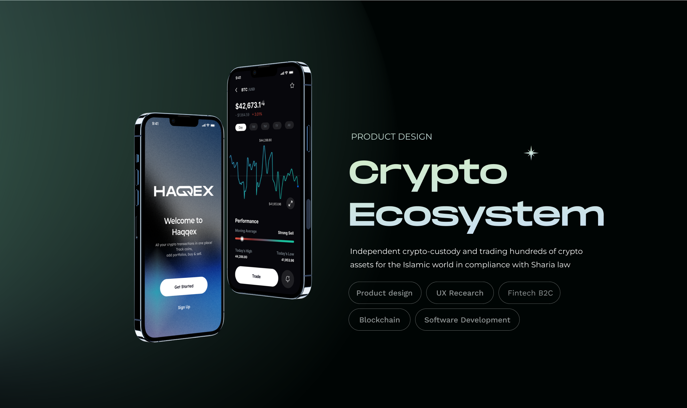
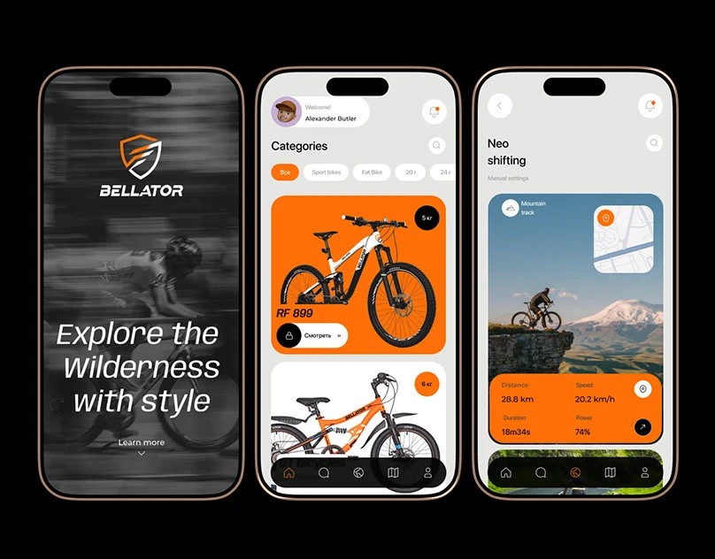
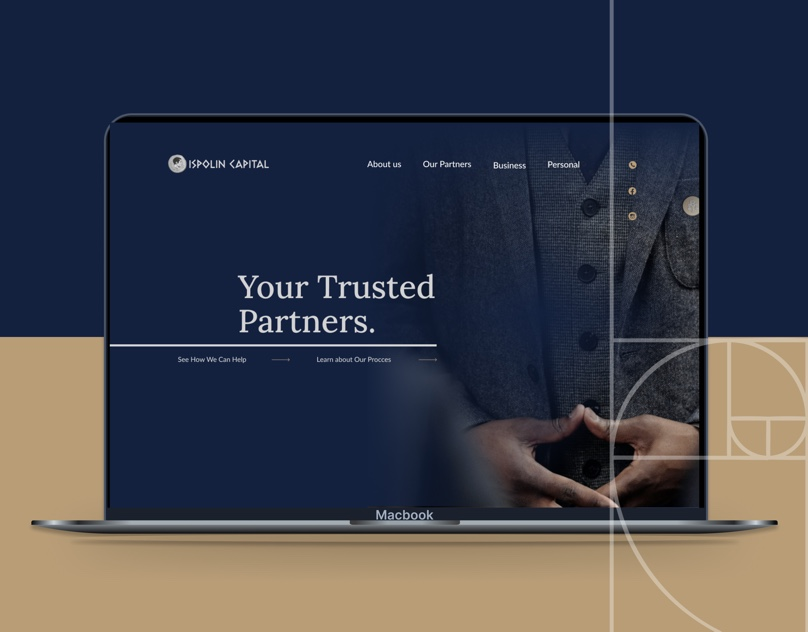
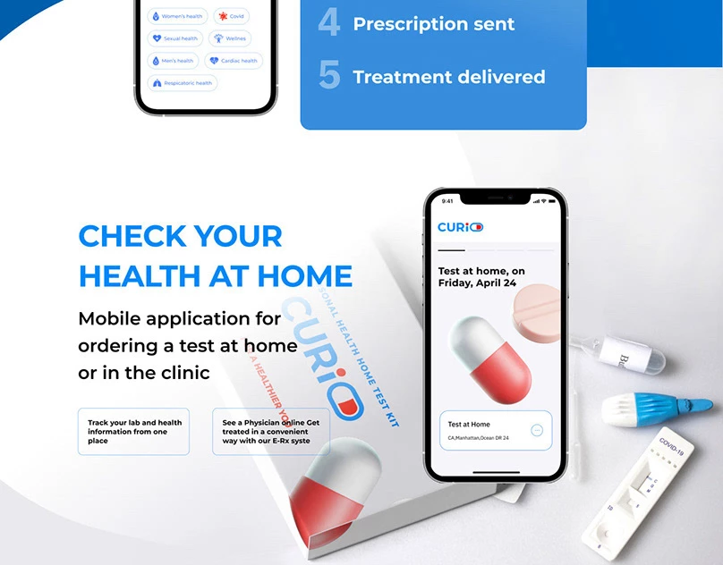
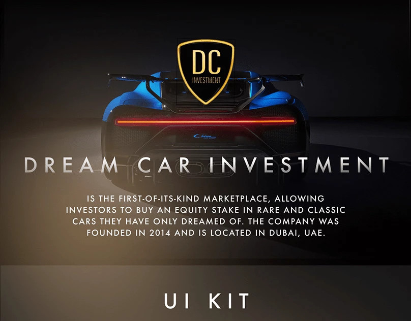
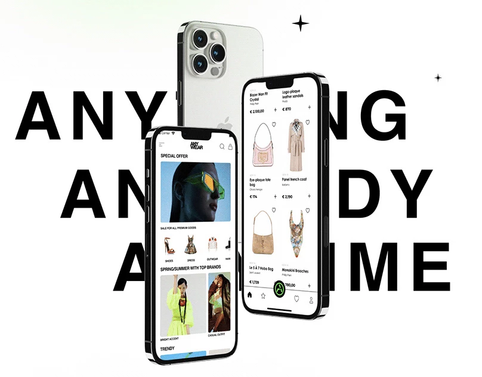

Product design lead · Product builder
От продуктового видения
До бизнес-результата
Участвую в формировании продуктовой стратегии, создаю UX-архитектуру и Key Visual.Веду полный цикл дизайна — от концепции до запуска, тестирования и развития
Software · Fintech · B2B SaaS · AI · Web3 · Mobile App
01Strategy
Что и зачем создаю
Определяю стратегию развития и ценность продукта на основе бизнес-целей, потребностей пользователей и исследований.
Product Discovery · Product Vision · Value Proposition · Product Strategy02Experience
Как продукт работает
Проектирую UX-архитектуру, продуктовую логику и сценарии взаимодействия, превращая концепцию в целостный пользовательский опыт.
UX Architecture · User Flows · Interaction Design · Prototyping03Identity
Как продукт воспринимается
Создаю визуальное направление и интерфейсную систему, формируя узнаваемый и последовательный образ продукта.
Art Direction · Visual Identity · UI Design · Design Systems04Evolution
Как продукт развивается
Проверяю гипотезы и дизайн-решения, используя результаты тестирования для улучшения опыта и дальнейшего развития продукта.
Usability Testing · Hypothesis Validation · Product Iteration · UX OptimizationI believe in products. In their power. In their value.I believe in products. In their power. In their value.
Портфолио
Продуктовые кейсы
Разные задачи. Один фокус —
опыт, который работает.
Fintech / B2B / Crypto01
Платформа международных переводов с использованием криптовалют в рамках экспериментального режима. Объединяет подключение банков, проверку и подписание документов, согласование сделок и проведение транзакций в едином рабочем пространстве. Прозрачные статусы помогают отслеживать каждый этап и пройти весь путь от регистрации до первой сделки.

HR Tech / SaaS02
Коробочное решение для сотрудников банка, объединяющее HR-сервисы, рабочие задачи, внутренние коммуникации и документы в едином цифровом пространстве. Помогает быстрее решать повседневные рабочие вопросы и взаимодействовать с корпоративными сервисами прямо со смартфона.

Crypto / Web303
Криптоэкосистема, объединяющая торговую веб-платформу, сайт и мобильное приложение. Дизайн охватывает регистрацию и верификацию, обзор рынка, торговлю и управление портфелем. Пользовательские сценарии и визуальная система связывают разные части продукта в последовательный опыт.

Brand / Web04
Брендинг и веб-дизайн для велосипедной лаборатории Bellator Bike Lab. Проект включает фирменную айдентику, визуальную систему и оформление сайта. Задача дизайна — передать характер бренда и последовательно представить его в цифровой среде.

Fintech / Investment05
Фирменный стиль и веб-платформа инвестиционной компании Ispolin Capital. В проекте объединены айдентика, дизайн страниц и организация информации о компании. Структура и визуальная иерархия помогают последовательно раскрыть её подход и инвестиционное направление.

Medtech / Mobile06
Medtech-продукт для телемедицины, в котором объединены дизайн платформы, мобильного интерфейса и брендинг. Работа охватывает пользовательские сценарии, навигацию и визуальную систему. Основной фокус — понятное взаимодействие с медицинским сервисом и последовательный опыт внутри продукта.

Investment / Web07
Веб-платформа инвестиционного проекта на автомобильном рынке. В кейсе представлены продуктовый дизайн, структура страниц и визуальная подача информации о проекте. Задача — помочь пользователю разобраться в предложении и пройти путь от первого знакомства к более подробному изучению.

Fashion / Mobile08
Мобильная fashion-платформа с пользовательским контентом и механиками монетизации. В кейсе показаны продуктовый дизайн, сценарии взаимодействия и визуальная система приложения. Контентная и коммерческая части связаны в единый опыт, который помогает пользователю ориентироваться в продукте.
Что я тут делаю?
Проектирую рост бизнеса
Создаю продукты, приносящие
бизнесу рост и прибыль
01Systems
Упрощаю сложные процессы
Проектирую CRM, торговые платформы и B2B-системы, превращая сложные бизнес-процессы в понятные и эффективные рабочие инструменты.
CRM · B2B Platforms · Trading Systems · UX Architecture02Web
Превращаю трафик в клиентов
Создаю сайты, которые раскрывают ценность продукта, формируют доверие и помогают бизнесу увеличивать конверсию и продажи.
Web Design · Landing Pages · Conversion · CRO03Mobile
Опыт, который удерживает
Проектирую мобильные приложения с интуитивными сценариями и удобными интерфейсами, повышая возвращаемость пользователей.
Art Direction · Visual Identity · UI Design · Design Systems04Stories
Превращаю идеи в аргументы
Создаю презентации и визуальные материалы, которые понятно раскрывают сложные идеи, убеждают аудиторию и помогают продавать решения.
Pitch Decks · Presentations · StorytellingI believe in business growth. In the power of design. In the value of every decisionI believe in business growth. In the power of design. In the value of every decision
Подход к работе
От первого “зачем”
до последнего пикселя
01Исследования и стратегия
- User Research
- A/B тестирование
- Customer Journey
- Конкурентный анализ
- Data-Driven Design
02Дизайн и системы
- UX / UI Design
- Дизайн-системы
- CX Design
- Key Visual
- Маркетинговые презентации
- Прототипирование
03Лидерство и процессы
- Управление командой
- Ментор
- Product Roadmap
- Design Operations
- Стейкхолдер-менеджмент
Discovery→Strategy→Design→Delivery
За каждым интерфейсом — человек.
Дизайн с вниманием
к людям
и результату
От исследования проблемы до запуска и развития продукта. Помогаю командам превращать сложную логику в понятный опыт, проверяю решения через исследования и тестирование, связывая каждое улучшение с целями бизнеса.
Мой опыт ↓Команды и продукты
Опыт, который
помогает видеть шире
Финансы, образование, технологии.
Продукты для международных рынков.
Опыт в FintechFINTECH+
Московская биржа
Продуктовая стратегия и UX-оптимизация
Реализовала дизайн трёх высоконагруженных B2B-платформ (Спецпроект, ЦФА 50+ млрд руб. эмиссии, клиринговая платформа), сократила время ключевых операций с 3–5 дней до 24 часов и увеличила ROI продукта в 2,2 раза.
Дизайн-система и масштабирование решений
Создала единую дизайн-систему для трёх платформ, ускорив time-to-market на 35%, снизив количество ошибок разработки и обеспечив миграцию компонентов с Vue.js на React.
Исследования и развитие продукта
Внедрила процессы продуктовых исследований и A/B-тестирования по фреймворку double diamond, провела редизайн онбординга и авторизации (УНЭП), повысив NPS на 27 п.п. за 6 месяцев.
Дизайн-лидерство и развитие экосистемы
Разработала Key Visual для новых направлений, концепцию рыночных виджетов для сайта Московской Биржи и карту компетенций дизайнеров для стандартизации грейдов и развития команды.
TIME TO PAYMENT3–5 дней → 24чA/B-тестирование с операторами платформы. Сокращение времени ключевых операций на платформе ЦФА
ОБЪЁМ ЭМИССИИ ЦФА50+ млрд ₽Спроектировала интерфейсы для выпуска и обращения ЦФА. Метрико-ориентированный подход к каждому интерфейсу
СпецпроектМеждународные переводыПолный цикл от заявки до исполнения. Онбординг через УНЭП — рост конверсии входа. Юзабилити-тесты со специалистами ВЭД
КЛИРИНГКлиринговая платформаСистема взаиморасчётов с критической точностью данных. Трансляция сложной финансовой логики в интерфейс
ДИЗАЙН-СИСТЕМАVue.js → ReactДизайн-система и миграция компонентов на единый технологический стек
ЮЗАБИЛИТИРегулярные тестыС профессиональными участниками рынка: трейдеры, брокеры, операторы
ПРОЦЕССЫDesign ReviewДокументация UX-решений, handoff с разработкой, менторинг дизайнеров
ЛИДЕРСТВОКарта компетенцийСтандартизация грейдов и треки развития дизайнеров
Сбербанк
Продуктовая стратегия и запуск международного продукта
Разработала банковское приложение для рынка Индии с нуля до MVP за 4 месяца: провела этнографические исследования, спроектировала end-to-end сценарии и локализовала UX под культурные особенности аудитории.
UX-исследования и оптимизация корпоративных решений
Переработала ERP-приложение для корпоративных клиентов: улучшила информационную архитектуру, внедрила шаблоны, валидацию и адаптивные подсказки, сократив время операций и кол-во польз. ошибок
Бренд-адаптация и визуальная стратегия
Создала Key Visual и бренд-элементы для адаптации глобального банковского продукта под индийский рынок, обеспечив целостный пользовательский опыт и соответствие локальным культурным особенностям.
MVP4 месяца4 месяца от старта проектирования до запуска MVP на рынке Индии
КОНВЕРСИЯРост входаЛокализованные сценарии регистрации с учётом культурных особенностей
ИССЛЕДОВАНИЯЭтнографияПолевые исследования с локальной аудиторией, выявление скрытых паттернов
TIME TO TASKЧасы → МинутыСокращение времени ключевых операций: отчёты, выгрузка, сверка данных
ОШИБКИСнижениеВалидация в реальном времени и адаптивные подсказки при заполнении форм
ADOPTIONРост adoptionРедизайн онбординга и навигации, снижение обращений в поддержку
Опыт в E-commerceE-COMMERCE+
Feymanlabs
Дизайн-лидерство и управление командой
Руководила дизайном трёх мобильных продуктов для рынков США, Европы и Азии: управляла командой из 3 дизайнеров, провела 5 наймов, внедрила дизайн-ревью, развитие компетенций и процессы командного взаимодействия.
Продуктовый дизайн и Discovery-процессы
Выстроила полный цикл discovery → delivery: исследования, CJM, прототипирование, юзабилити-тесты и A/B-эксперименты. Обеспечила запуск трёх мобильных приложений на международных рынках.
Дизайн-системы и масштабирование решений
Создала модульные дизайн-системы для medtech, fashion и crypto-продуктов, обеспечив единый подход к развитию интерфейсов, ускорение разработки и масштабирование решений между платформами.
Продуктовая стратегия и рост метрик
Разработала визуальную концепцию и UX для CURIO, ANYWEAR и HAQQEX, включая Key Visual и продуктовые сценарии, что способствовало росту пользовательской базы, Retention и активности после выхода на новые рынки.
КОМАНДА3 + 5 наймовКоманда 3 дизайнера, 5 наймов полного цикла
DISCOVERYFull cycleИнтервью, CJM, юзабилити, A/B-тесты
MEDTECHCURIOHIPAA-совместимый интерфейс для телемедицины. Key Visual. Рост охвата услуг и retention после запуска
FASHIONANYWEARИнтерфейс с UGC и механизмами монетизации. Рост пользовательской базы и конверсии в покупку
CRYPTOHAQQEXМобильное приложение + крипто-биржа на единой дизайн-системе. Рост активных трейдеров, выход на Европу и Азию
Опыт в Ed-techED-TECH+
Большая Российская Энциклопедия
Построение дизайн-направления с нуля
Создала дизайн-функцию с нуля: наняла команду из 5 дизайнеров, разработала карту компетенций, внедрила процессы ревью, KPI-трекинга и развития специалистов.
Операционное управление и процессы
Выстроила систему взаимодействия дизайна и разработки через Jira, RACI-матрицу и чек-листы качества, сформировала бюджет на исследования и инструменты
Редизайн продукта и UX-трансформация
Провела полный редизайн портала: исследования, CJM, юзабилити-тестирование, новая архитектура и визуальная система. Разработала персонализированную авторизацию и навигацию, увеличив конверсию и DAU продукта
НАЙМ5 дизайнеровПолный цикл: скрининг, тестовые, собеседования, оффер, онбординг
ГРЕЙДЫ3 грейдаКарта компетенций с 12 критериями оценки и планами развития
БЮДЖЕТ500 тыс. ₽/годИсследования и инструменты: Maze, Miro, Figma
РЕДИЗАЙНПолный редизайнГлубинные интервью, CJM, юзабилити-тестирование → новая ИА и визуальный стиль
КОНВЕРСИЯРост метрикКонверсия в подписку, снижение bounce rate, рост DAU
ПРОЦЕССЫRACI + JiraДизайн-ревью, приоритизация, чеклисты, 1:1, трекинг KPI
Министерство просвещения РФ → Сбербанк Технологии
Единственный дизайнер продуктовой команды
Начинала как единственный дизайнер продуктовой команды в Министерстве просвещения РФ, затем перешла с этой же командой в Сбербанк Технологии для масштабирования продукта.
Образовательный портал «Растим детей»
Спроектировала образовательный портал «Растим детей» для детей и родителей (Министерство просвещения).
Внутренние B2B-продукты
Спроектировала внутренние B2B-продукты для сотрудников министерства.
Школьная цифровая платформа
Спроектировала сайт школьной цифровой платформы в составе команды дизайнеров (Сбербанк Технологии) — государственный образовательный продукт с аудиторией 10+ млн пользователей.
МИНПРОСВЕЩЕНИЯ«Растим детей»Образовательный портал для детей и родителей
МИНПРОСВЕЩЕНИЯB2B-платформыВнутренние продукты для сотрудников министерства
СБЕРБАНК ТЕХНОЛОГИИ10+ млн пользователейШкольная цифровая платформа — государственный образовательный продукт
СТЕКAdobe XD, FigmaJira, Miro — совместная работа с командой и разработкой
Опыт в SoftwareSOFTWARE+
Gotechsoftware
Full-time с совмещением обучения
Full-time, совмещала с обучением в магистратуре. Компания реализовывала проекты для заказчиков из США — вела полный цикл дизайна: брендинг, упаковка, B2B SaaS-платформы.
Клиентские проекты
Участвовала в разработке сайтов и веб-платформ для клиентских проектов: Hampton, Berkshire, Эватор, Формула 360 (в паре с коллегой-дизайнером).
Полный цикл дизайна
Работала над полным циклом дизайна — от брендинга и упаковки продукта до интерфейсов B2B SaaS-платформ.
ПРОЕКТHamptonСайт и веб-платформа
ПРОЕКТBerkshireСайт и веб-платформа
ПРОЕКТЭваторСайт и веб-платформа
ПРОЕКТФормула 360Сайт и веб-платформа
ПОЛНЫЙ ЦИКЛБрендинг → B2B SaaSОт брендинга и упаковки продукта до интерфейсов B2B SaaS-платформ
Образование
2016–2019РГСУ — магистр дизайна
Российский Государственный Социальный Университет
Product Design Team Lead
British Higher School of Art & Design